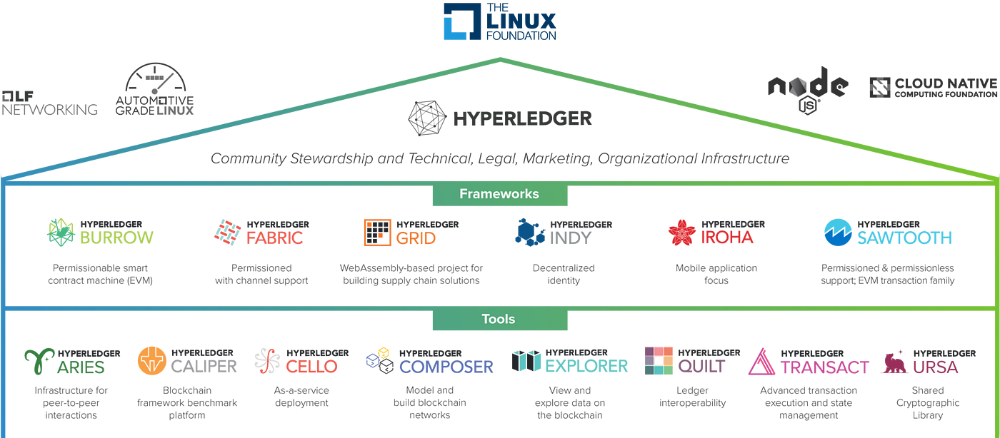
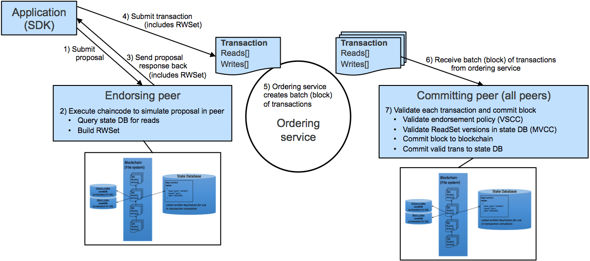

Hyperledger and Hyperledger Fabric
Posted on August 26, 2024
Hyperledger is an open-source collaborative effort hosted by the Linux Foundation, aimed at advancing cross-industry blockchain technologies. It was founded in 2015 to provide a framework for developing and deploying enterprise-grade blockchain solutions. Hyperledger is not a blockchain or a cryptocurrency but a global collaborative initiative that includes various projects, each designed to fulfill specific needs within the blockchain ecosystem.
Hyperledger itself is not a single software product or codebase. It is an umbrella project under the Linux Foundation that hosts multiple independent projects, each with its own codebase. It acts as a governance body and provides a collaborative space for different blockchain projects. It establishes best practices, standards, and guidelines for developing blockchain technologies but does not have a single codebase.
Imagine it as a large open-source initiative or organization that supports and oversees multiple blockchain-related projects. Think of it as a collection of projects, each with its own development team and codebase.
Hyperledger Fabric
Hyperledger Fabric is one of the key projects under the Hyperledger umbrella. It is a blockchain framework implementation designed to be a foundation for developing applications or solutions with a modular architecture.
Features of Hyperledger Fabric
- Permissioned Blockchain: Unlike public blockchains, Hyperledger Fabric is a permissioned network, meaning that all participants are known and have specific roles. This is ideal for enterprise use cases where data privacy and control are critical.
- Modular Design: It allows components, such as consensus and membership services, to be plug-and-play. Developers can customize the network according to their specific requirements.
- Smart Contracts (Chaincode): Hyperledger Fabric uses smart contracts known as "chaincode" to define the logic of transactions. Chaincode runs on a network of nodes called peers.
- Private Channels: It supports private channels, enabling a group of participants to create a separate ledger of transactions. This feature is crucial for scenarios where confidential data needs to be shared only with certain participants.
- Pluggable Consensus: Hyperledger Fabric provides flexibility in consensus mechanisms, allowing users to choose the best consensus for their application. For example, it can use Kafka-based ordering or other consensus methods.
- Identity Management and Access Control: Fabric includes built-in identity management, which allows for strict access control and the ability to perform audits. This feature is managed through the Membership Service Provider (MSP).
Hyperledger Fabric Architecture Components
Hyperledger Fabric has a unique architecture that separates different roles and components, which are designed to handle specific tasks within the blockchain network. Here are the main components:
-
Peer Nodes: These are the fundamental building
blocks of the Fabric network. Peers maintain the ledger and run
smart contracts (called chaincode). They come in two primary types:
- Endorsing Peers: These peers simulate and endorse transactions based on the chaincode logic. They do not update the ledger immediately; they provide signatures to validate the transaction.
- Committing Peers: These peers validate the endorsed transactions and commit them to the ledger. A peer can act as both endorsing and committing peer.
- Ordering Service Nodes: These nodes are responsible for ordering the transactions in the network. They collect endorsed transactions, package them into blocks, and deliver these blocks to committing peers. Hyperledger Fabric uses pluggable consensus mechanisms for ordering transactions, such as Kafka or Raft.
-
Shared Ledger: Each peer in the network maintains a
copy of the ledger. The ledger has two parts:
- World State: A database (usually CouchDB or LevelDB) that holds the current state of the assets as a key-value store.
- Blockchain: A log of all transactions that have led to the current world state, stored as an append-only chain of blocks.
- Chaincode (Smart Contracts): These are the smart contracts in Hyperledger Fabric. They define the business logic that governs transactions. Chaincode is executed by endorsing peers during transaction proposal processing.
- Membership Service Provider (MSP): Manages identities and access control within the network. It authenticates and authorizes participants, ensuring that only known and trusted identities can interact with the network.
- Channels: Hyperledger Fabric allows the creation of separate channels to maintain privacy. A channel is a private subnet of communication between two or more specific network members. Each channel has its own ledger and can deploy its own chaincode.
- Organizations: A network consists of multiple organizations, each owning and managing certain peers. This structure enables decentralized governance of the network.
Transaction Flow in Hyperledger Fabric
The transaction flow in Hyperledger Fabric is a sequence of steps from transaction proposal to commitment on the ledger. Here’s a step-by-step description of how transactions are processed:
- Transaction Proposal: A client application initiates a transaction by sending a proposal to one or more endorsing peers. The proposal contains the transaction details and the requested changes. The endorsing peers simulate the transaction using the chaincode but do not immediately commit the transaction to the ledger.
- Endorsement: Endorsing peers execute the transaction simulation and generate a response containing the proposed transaction's read and write sets. Each endorsing peer signs the response to endorse it and sends it back to the client. 
- Transaction Submission: The client collects the endorsements from multiple peers (as required by the endorsement policy). The endorsed transaction proposal is then sent to the ordering service.
- Ordering: The ordering service receives transactions from various clients and orders them into blocks. The ordered transactions are grouped into blocks and sent to all committing peers.
- Validation: Committing peers validate the transactions within a block against the endorsement policies and check for conflicts. Validation ensures that all transactions conform to the network's endorsement policy and that no double-spending or conflicts occur.
- Commitment: Once validated, the committing peers append the block of valid transactions to their local copy of the blockchain. The world state is updated based on the write sets of the committed transactions.
- Event Emission: After committing the transactions, peers emit events to notify client applications about the successful or failed processing of transactions.
Consensus
Pluggable Consensus: Hyperledger Fabric supports a modular approach to consensus. It separates the transaction endorsement and ordering processes, allowing different consensus mechanisms to be plugged in. This separation provides flexibility to use different consensus mechanisms depending on the use case. For example, Fabric can use a crash fault-tolerant (CFT) ordering service like Kafka or a byzantine fault-tolerant (BFT) ordering service.
Smart Contracts
Chaincode: In Hyperledger Fabric, smart contracts are called chaincode. They define the business logic and rules for transactions. Chaincode runs within a Docker container on the endorsing peers. Chaincode functions can perform CRUD operations on the world state and emit events.
Features Unique to Hyperledger Fabric
- General-Purpose Smart Contracts: Hyperledger Fabric supports the execution of general-purpose smart contracts, allowing for complex business logic. In contrast, Hyperledger Aries and Indy are specialized for identity management and lack built-in mechanisms for executing arbitrary business logic.
- Access Control Mechanism: Hyperledger Fabric provides a comprehensive access control mechanism, including transaction-level access control and private channels. Aries focuses on secure communication and credential exchange, while Indy, though permissioned, is primarily centered on identity management without extensive access control features.
- Private Data Collections: Fabric supports private data collections, offering controlled, shared data isolation. Aries and Indy handle private data but do not provide the same level of controlled data isolation as Fabric.
- Rich Query Capabilities: Fabric enables rich querying on ledger data via CouchDB, facilitating complex queries on the state database. Aries lacks built-in ledger querying support, focusing instead on identity and credential exchange. Indy supports identity-specific queries but does not offer general-purpose rich query capabilities like Fabric.
- Consensus Protocol Flexibility: Fabric supports flexible consensus mechanisms, allowing customization according to use case requirements. Indy utilizes the Plenum consensus protocol, which is tailored for identity transactions and does not offer the same flexibility in consensus mechanism customization. Additionally, Indy does not have a concept of private channels.
- Transaction Endorsement Policies: Hyperledger Fabric supports complex transaction endorsement policies. Indy, with its focus on identity management, handles simpler transactions and basic endorsement policies but lacks the flexibility seen in general-purpose platforms like Fabric.
Conclusion
Hyperledger Fabric is a powerful and flexible blockchain framework that is well-suited for various enterprise applications. Its permissioned network, modular design, and support for private channels make it a popular choice for organizations looking to leverage blockchain technology for secure and scalable solutions. With its robust identity management, consensus mechanisms, and smart contract capabilities, Hyperledger Fabric provides a comprehensive platform for building and deploying blockchain applications across industries.